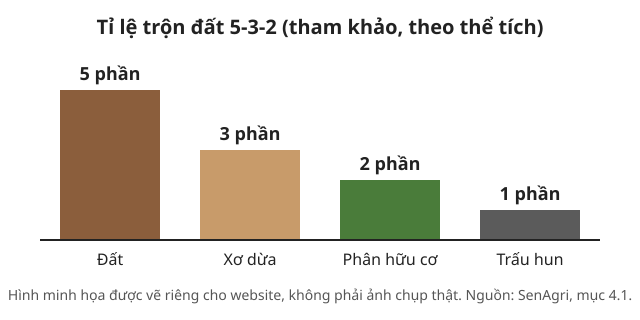

Trộn đất trồng rau theo tỉ lệ 5-3-2
Tác giả: Ruler
Chuyên mục: Đất và phân bón hữu cơ — Cập nhật: 23/11/2026
Nhiều người mới trồng rau chăm tưới rất đều, gieo hạt đúng mùa, mà rau vẫn lên yếu. Lá nhỏ, thân gầy, rễ không bám được. Nguyên nhân thường nằm ở đất, không phải ở hạt. Đất trong chậu khác hẳn đất ngoài vườn: chậu nhỏ, đất ít, nước tưới và mưa làm đất nén chặt rất nhanh. Nếu đất vừa nặng, vừa bí, vừa nghèo dinh dưỡng, rau sẽ không lớn được dù bạn tưới bao nhiêu.
Bài viết này hướng dẫn cách trộn đất trồng rau tại nhà theo tỉ lệ 5-3-2, là tỉ lệ tham khảo được nêu trong hướng dẫn làm vườn rau sân thượng của Sân Vườn Sài Gòn: 5 phần đất nền, 3 phần giá thể tạo xốp và 2 phần phân bón. Bài viết cũng đối chiếu tỉ lệ này với hai công thức khác đã công bố, để bạn hiểu vì sao các công thức khác nhau mà vẫn dùng được, và khi nào nên điều chỉnh tỉ lệ cho hợp với chậu và loại rau của mình. Tỉ lệ 5-3-2 là điểm bắt đầu tốt cho người mới, không phải công thức bắt buộc cho mọi loại rau.
Vì sao đất trong chậu cần trộn, không dùng đất vườn nguyên chất
Đất vườn nguyên chất khi cho vào chậu thường nặng và dễ nén chặt. Sau vài lần tưới, đất bết lại, nước khó thấm xuống, rễ rau thiếu không khí và dễ thối. Đất sạch mua sẵn thì nhẹ hơn, nhưng nếu chỉ dùng một loại đất duy nhất, đất vẫn có thể thiếu dinh dưỡng sau một lứa rau, hoặc giữ nước quá nhiều hay quá ít tùy loại.
Trộn đất là cách ghép ba vai trò lại với nhau. Đất nền giữ cho cây đứng vững và giữ một phần khoáng chất. Giá thể tạo xốp làm đất nhẹ, tơi và thoát nước tốt. Phân hữu cơ đã hoai cung cấp dinh dưỡng cho rau trong quá trình sinh trưởng. Thiếu một trong ba vai trò này, đất sẽ lệch: chỉ có đất nền thì đất bí, chỉ có giá thể xốp thì cây thiếu dinh dưỡng, chỉ có phân hữu cơ thì đất dễ nóng rễ và giữ nước không đều.
Một điểm cần nói rõ ngay từ đầu là tỉ lệ trộn trong bài này tính theo thể tích, không tính theo cân nặng. Bạn dùng một chiếc xô nhỏ hay một chiếc ca làm đơn vị đo, đong đủ số phần rồi trộn đều. Đừng cân đất bằng cân nhà bếp, vì đất ẩm nặng hơn đất khô rất nhiều, cân theo cân nặng sẽ làm tỉ lệ lệch đi.
Tỉ lệ 5-3-2 nghĩa là gì
Tỉ lệ 5-3-2 gồm ba phần, tổng cộng 10 phần theo thể tích:

- 5 phần đất nền: đất thịt nhẹ, đất phù sa hoặc đất sạch đã qua xử lý. Phần này giúp cây đứng vững và cung cấp một phần khoáng chất nền.
- 3 phần giá thể tạo xốp: xơ dừa đã xử lý, trấu hun, tro trấu hoặc perlite. Phần này giúp đất nhẹ, tơi xốp, hạn chế nén chặt và hỗ trợ thoát nước.
- 2 phần phân bón hữu cơ: phân trùn quế, phân bò hoai mục hoặc compost đã ủ hoai. Phần này cung cấp chất hữu cơ và dinh dưỡng cho rau.
Ví dụ thực tế: nếu bạn dùng một chiếc xô nhỏ làm đơn vị đo, bạn đong 5 xô đất nền, 3 xô xơ dừa đã xử lý hoặc trấu hun, và 2 xô phân hữu cơ đã hoai, rồi trộn đều trong một thùng lớn. Nếu bạn chỉ cần một chậu nhỏ, bạn dùng một chiếc ca nhỏ làm đơn vị đo, đong 5 ca, 3 ca và 2 ca theo đúng thứ tự đó.
Theo hướng dẫn của Sân Vườn Sài Gòn, để cây phát triển tốt thì độ dày của đất từ 10–13 cm là chuẩn cho rau trồng trên sân thượng. Con số này là khoảng tham khảo cho rau ăn lá trong chậu nông. Với rau cần nhiều đất hơn như mồng tơi hay cà chua, bạn cần chậu sâu hơn, và bài về 5 loại rau dễ trồng đã nêu chậu sâu tham khảo cho từng loại.
Đối chiếu với hai công thức khác đã công bố
Tỉ lệ 5-3-2 không phải là công thức duy nhất. Việc đối chiếu với công thức khác giúp bạn không hoang mang khi thấy mỗi nơi ghi một tỉ lệ khác nhau.
Công thức thứ nhất là công thức của Sở Khoa học và Công nghệ Đồng Nai trong quy trình trồng rau sân thượng: trộn 50% đất phù sa với 50% phân trùn quế, hoặc dùng 50% đất Tribat, là loại giá thể nền hữu cơ. Công thức này đơn giản hơn, chỉ có hai thành phần, và phù hợp khi bạn mua được đất Tribat hoặc đất phù sa tốt và phân trùn quế đã hoai. Nhược điểm là nếu đất phù sa của bạn nặng, công thức hai thành phần này có thể thiếu độ xốp, nên bạn cần kiểm tra đất sau khi trộn: nắm đất lại rồi thả ra, đất tơi ra là được, đất vón cục chặt là còn bí.
Công thức thứ hai là công thức của GreenHome: khoảng 50% đất thịt sạch, khoảng 30% phân hữu cơ đã hoai mục, khoảng 15% xơ dừa hoặc trấu hun, và khoảng 5% vỏ trấu hoặc mùn cưa. Công thức này nhiều phân hữu cơ hơn tỉ lệ 5-3-2, và ít giá thể xốp hơn. GreenHome cũng nêu thêm rằng có thể bổ sung vôi bột khoảng 0,5–1%, tương đương khoảng 100 g cho mỗi 10 kg đất, và Trichoderma khoảng 5–10 g cho mỗi 10 kg hỗn hợp, theo hướng dẫn của sản phẩm. Bạn chỉ nên dùng vôi và Trichoderma khi đã đọc kỹ hướng dẫn trên bao bì sản phẩm mình mua, vì liều lượng và cách dùng khác nhau theo từng sản phẩm.
Bảng đối chiếu dưới đây tổng hợp từ ba nguồn đã dẫn. Bảng này không nói công thức nào đúng nhất, mà chỉ cho thấy các công thức đều giữ chung một nguyên tắc: đất nền chiếm khoảng một nửa, phần còn lại chia cho giá thể xốp và phân hữu cơ.
| Công thức (tham khảo) | Đất nền | Giá thể tạo xốp | Phân hữu cơ | Khi nào hợp |
|---|---|---|---|---|
| 5-3-2 (Sân Vườn Sài Gòn) | 5 phần | 3 phần | 2 phần | Người mới, rau ăn lá trong chậu |
| 50-50 (Sở KH&CN Đồng Nai) | 50% đất phù sa | — (dùng đất Tribat) | 50% phân trùn quế | Khi mua được đất Tribat hoặc đất phù sa tốt |
| 50-30-15-5 (GreenHome) | Khoảng 50% | Khoảng 15% xơ dừa/trấu hun + 5% vỏ trấu | Khoảng 30% | Khi muốn đất giàu dinh dưỡng hơn cho lứa đầu |
Một công thức khác nữa, được nêu trong hướng dẫn về xơ dừa của SenAgri, là 4 phần đất sạch hoặc giá thể nền, 3 phần xơ dừa đã xử lý, 2 phần phân hữu cơ hoai mục và 1 phần trấu hun hoặc vật liệu giúp tăng độ thông thoáng. Công thức này gần với tỉ lệ 5-3-2, chỉ khác là tách riêng trấu hun thành một phần. Công thức này là tỉ lệ tham khảo theo thể tích, không phải công thức bắt buộc, nên thử trên một lượng nhỏ trước khi áp dụng cho toàn bộ diện tích trồng.
Chuẩn bị nguyên liệu: xơ dừa phải xử lý trước
Xơ dừa là nguyên liệu dễ mua, giữ ẩm tốt và làm đất tơi xốp, nhưng xơ dừa mới mua về cần xử lý trước khi trộn. Nhiều hướng dẫn, trong đó có hướng dẫn của Ecolar và SenAgri, đều nhắc rằng xơ dừa mới có chất chát, gọi là tanin, nếu không xả sạch sẽ làm cây chậm lớn. Cách xử lý được nêu trong hướng dẫn của SenAgri là ngâm xơ dừa trong nước, đảo đều cho chất hòa tan thoát ra, rồi xả lại và lặp lại đến khi nước rửa bớt màu, sau đó để ráo trước khi trộn. SenAgri cũng cảnh báo không dùng xơ dừa thô trực tiếp vì có thể còn tanin và hợp chất khác.
Trấu hun cũng cần mua đúng loại. Trấu hun là trấu đã đốt thành than nhẹ, giúp đất thoáng khí và hạn chế nấm bệnh. Trấu tươi chưa hun thì khác, nó phân hủy chậm và có thể hút đạm trong đất trong thời gian đầu. Nếu bạn chỉ mua được trấu tươi, hãy dùng ít hơn và trộn thêm phân hữu cơ đã hoai, đừng dùng trấu tươi thay hoàn toàn cho trấu hun.
Phân hữu cơ phải là phân đã hoai mục. Phân tươi chưa ủ hoai sẽ nóng, có mùi, thu hút ruồi và có thể làm cháy rễ cây non. Phân trùn quế, phân bò hoai mục và compost đã ủ hoai đều dùng được. Khi mua, hãy chọn loại có mùi đất, tơi xốp, không còn mùi hôi nồng. Nếu phân còn ướt và nặng mùi, hãy để phân phơi gió thêm vài ngày trước khi trộn.
Các bước trộn đất từng bước
Bước 1: Chuẩn bị dụng cụ và mặt bằng
Bạn cần một thùng lớn hoặc một tấm bạt sạch để trộn, một chiếc xô nhỏ làm đơn vị đo, găng tay, khẩu trang và một chiếc xẻng nhỏ. Trộn đất ngoài sân thượng hay ban công sẽ bụi, nên hãy đeo khẩu trang và găng tay, đừng trộn đất trong nhà bếp hay phòng ngủ.
Bước 2: Đong đủ ba phần theo tỉ lệ 5-3-2
Đong 5 phần đất nền, 3 phần xơ dừa đã xử lý hoặc trấu hun, và 2 phần phân hữu cơ đã hoai. Đổ từng phần vào thùng trộn, đừng đổ tất cả cùng lúc rồi mới trộn, vì phần nặng sẽ chìm xuống đáy và phần nhẹ sẽ nổi lên trên.
Bước 3: Trộn đều tay
Dùng xẻng đảo đất từ dưới lên trên, từ ngoài vào trong, trộn cho tới khi màu đất đều, không còn vệt phân hữu cơ đậm hay vệt xơ dừa nhạt riêng rẽ. Trộn kỹ là bước quan trọng nhất, vì đất trộn không đều sẽ làm chỗ nhiều phân, chỗ ít phân, cây trong cùng một chậu sẽ lớn không đều.
Bước 4: Kiểm tra độ tơi và độ ẩm
Nắm một nắm đất đã trộn, bóp nhẹ rồi thả ra. Đất tơi ra là đạt. Đất vón thành cục chặt không rời ra là đất còn bí, cần thêm giá thể xốp. Đất rời ra như cát khô là đất quá khô, cần tưới ẩm nhẹ trước khi gieo hạt.
Sau đó, tưới nước nhẹ lên đất đã trộn, để đất ẩm đều rồi mới gieo hạt hoặc trồng cây con. Theo hướng dẫn của Sở Khoa học và Công nghệ Đồng Nai, khi trồng cây con, bạn nên tưới đẫm nước vào đất trước khi trồng, rồi mới đặt cây con xuống. Với hạt gieo trực tiếp, bạn chỉ cần tưới phun sương nhẹ sau khi gieo, tránh tưới mạnh làm trôi hạt.
Bước 5: Đổ đất vào chậu
Đổ đất vào chậu trồng rau cách miệng chậu khoảng 2 cm, san phẳng mặt đất. Khoảng trống 2 cm này giúp nước tưới không tràn ra ngoài, và giúp bạn bón thêm phân sau này mà không làm đất đầy tràn miệng chậu. Đây cũng là khoảng cách được nêu trong quy trình của Sở Khoa học và Công nghệ Đồng Nai.
Khi nào cần điều chỉnh tỉ lệ
Tỉ lệ 5-3-2 là điểm bắt đầu, không phải tỉ lệ cố định cho mọi trường hợp. Bạn nên điều chỉnh khi gặp một trong các dấu hiệu sau:
- Đất giữ nước quá lâu, mặt đất ướt nhiều ngày sau khi tưới: tăng phần giá thể tạo xốp lên, giảm phần đất nền xuống một chút, và kiểm tra lỗ thoát nước ở đáy chậu.
- Đất khô quá nhanh, tưới sáng chiều đã khô trắng mặt: tăng phần xơ dừa đã xử lý lên một chút, vì xơ dừa giữ ẩm tốt, và phủ một lớp rơm khô hoặc lá khô lên mặt đất để giữ ẩm.
- Rau lên yếu, lá nhạt màu dù đã tưới đều: có thể đất thiếu dinh dưỡng, hãy bón thêm phân hữu cơ đã hoai lên mặt đất sau khi cây đã bén rễ, thay vì trộn thêm phân tươi vào đất đang trồng cây.
- Trồng rau ăn quả như cà chua, ớt: các loại này cần nhiều dinh dưỡng hơn rau ăn lá, nên bạn có thể tăng phần phân hữu cơ lên một chút, và dùng chậu sâu hơn. Đừng tăng phân quá nhiều cùng lúc, vì phân nhiều quá cũng làm cây non bị nóng rễ.
Sau mỗi lứa rau, đất trong chậu sẽ nghèo đi. Bạn không cần thay toàn bộ đất sau mỗi lứa. Hãy xới tơi đất, phơi đất vài nắng, bổ sung thêm phân hữu cơ và giá thể xốp rồi trộn lại. Theo hướng dẫn của Sở Khoa học và Công nghệ Đồng Nai, sau mỗi lần thu hoạch nên bổ sung thêm mùn giun, và khi trồng rau mới thì xới đất tơi, phơi 2–3 nắng, bổ sung hỗn hợp phân giun và đất vào thùng cách miệng 2 cm.
Những lỗi thường gặp khi trộn đất
Lỗi thứ nhất là dùng đất vườn nguyên chất không trộn gì thêm. Đất vườn trong chậu rất nhanh nén chặt, rễ rau không thở được. Hãy luôn trộn thêm giá thể xốp và phân hữu cơ, dù đất vườn nhà bạn trông rất tốt.
Lỗi thứ hai là dùng phân chưa hoai. Phân tươi có mùi hôi, thu hút ruồi, và có thể làm cây non chết. Hãy mua phân đã hoai mục, hoặc tự ủ compost cho tới khi phân tơi xốp, hạt mịn, không còn mùi hôi thối và có màu nâu đen, như mô tả trong hướng dẫn ủ compost của Sở Khoa học và Công nghệ Ninh Bình.
Lỗi thứ ba là trộn đất quá ướt. Đất ướt trộn sẽ vón cục, khó tơi. Hãy trộn đất khi đất còn hơi ẩm, không ướt sũng, rồi mới tưới ẩm nhẹ sau khi đã đổ đất vào chậu.
Lỗi thứ tư là đổ đất đầy tràn miệng chậu. Đất đầy quá sẽ tràn ra ngoài mỗi lần tưới, và bạn không còn chỗ để bón thêm phân sau này. Hãy luôn chừa khoảng 2 cm từ mặt đất tới miệng chậu.
Kết luận
Trộn đất không khó, chỉ cần nhớ ba vai trò: đất nền giữ cây đứng vững, giá thể xốp giữ đất tơi và thoát nước, phân hữu cơ nuôi cây lớn lên. Tỉ lệ 5-3-2 là một điểm bắt đầu tốt cho người mới, vì nó cân bằng cả ba vai trò đó. Bạn đong theo thể tích, trộn đều tay, kiểm tra đất tơi ra khi nắm lại, đổ đất cách miệng chậu 2 cm, tưới ẩm nhẹ rồi mới gieo hạt.
Khi đã trộn được một mẻ đất tốt, bạn sẽ thấy rau lên khác hẳn: cây bén rễ nhanh, lá xanh và mập, ít bị úng rễ. Và khi đất đã tốt, việc tiếp theo là giữ đất luôn giàu dinh dưỡng qua nhiều lứa rau. Bài tiếp theo sẽ hướng dẫn cách tự làm phân compost từ rác nhà bếp, để bạn có phân hữu cơ dùng dần mà không cần mua thêm.
Nguồn tham khảo
- Sân Vườn Sài Gòn — Vườn rau sân thượng: hướng dẫn cách trồng và các mẫu thiết kế: trộn theo tỉ lệ 5 phần đất nền + 3 phần giá thể tạo xốp + 2 phần phân bón, độ dày đất từ 10–13 cm là chuẩn : https://sanvuonsaigon.vn/vuon-rau-san-thuong
- Sở Khoa học và Công nghệ Đồng Nai — Quy trình trồng và chăm sóc rau trên sân thượng, ban công (tài liệu PDF): trộn 50% đất phù sa + 50% phân trùn quế (hoặc 50% đất Tribat); đổ đất vào chậu cách miệng chậu 2 cm; sau thu hoạch bổ sung mùn giun, xới đất tơi và phơi 2–3 nắng khi trồng lứa mới : https://nguontin.khcndongnai.gov.vn/wp-content/uploads/2021/11/2016-NN-207.pdf
- GreenHome — Cách trộn đất trồng rau tại nhà hiệu quả và tiết kiệm: công thức tham khảo khoảng 50% đất thịt sạch, 30% phân hữu cơ đã hoai mục, 15% xơ dừa hoặc trấu hun, 5% vỏ trấu hoặc mùn cưa; vôi bột khoảng 0,5–1%, tương đương khoảng 100 g cho mỗi 10 kg đất; Trichoderma khoảng 5–10 g cho mỗi 10 kg hỗn hợp, theo hướng dẫn của sản phẩm : https://greenhome.com.vn/cach-tron-dat-trong-rau-tai-nha/
- SenAgri — Xơ dừa là gì? Cách xử lý và sử dụng xơ dừa trồng cây hiệu quả (bài đăng 28/10/2026, mục 4.1 "Giá thể trồng rau tại nhà"): công thức tham khảo cho rau ăn lá là 4 phần đất sạch, 3 phần xơ dừa đã xử lý, 2 phần phân hữu cơ hoai mục, 1 phần trấu hun hoặc vật liệu giúp tăng độ thông thoáng; các công thức là tỉ lệ tham khảo theo thể tích, không phải công thức bắt buộc, nên thử trên lượng nhỏ trước; không dùng xơ dừa thô trực tiếp vì có thể còn tanin; ngâm và rửa xơ dừa, đảo đều, lặp lại đến khi nước rửa bớt màu : https://www.senagri.vn/xo-dua-la-gi-cach-xu-ly-va-su-dung-xo-dua-trong-cay-hieu-qua
- Ecolar — Cách chuẩn bị đất và bón lót phân hữu cơ cho rau thùng xốp: xơ dừa mới mua về cần ngâm nước và xả lại vài lần để loại bỏ chất chát (tanin), nếu không sẽ làm cây chậm lớn; ngâm xơ dừa trong nước sạch khoảng 1 ngày, xả và thay nước 2–3 lần đến khi nước xả ra trong, không còn màu nâu vàng đậm : https://ecolar.vn/blogs/phan-huu-co-trong-rau/chuan-bi-dat-va-bon-lot-phan-huu-co-cho-rau-thung-xop